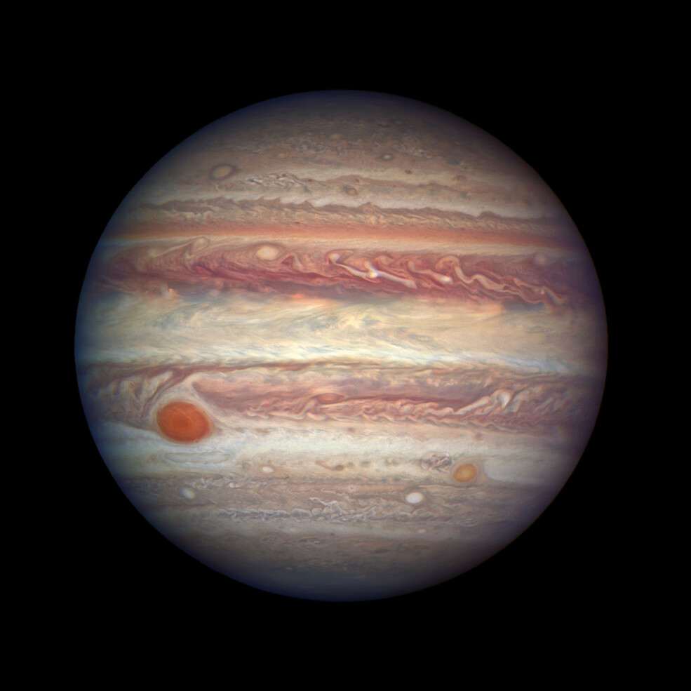

| Earth | Mars | Jupiter | Saturn | |
|---|---|---|---|---|
| Image | |
|
 | |
| Mass (10 24 kg) | 5.97 | 0.642 | 1898 | 568 |
| Diameter (km) | 12,756 | 6792 | 142,984 | 120,536 |
| Density (kg/m 3) | 5514 | 3934 | 1326 | 687 |
| Gravity (kg/m3) | 9.8 | 3.7 | 23.1 | 9.0 |
| Rotation Period (hours) | 23.9 | 24.6 | 9.9 | 10.7 |
| Length of Day (hours) | 24.0 | 24.7 | 9.9 | 10.7 |
| Distance from Sun (106 km) | 149.6 | 228.0 | 778.5 | 1432.0 |